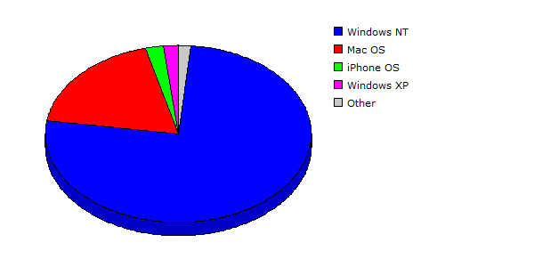

| Rank |
Operating System |
Hits |
Visitors |
| 1 |
Windows NT |
112434 |
79.38% |
6277 |
75.98% |
| 2 |
Mac OS |
23328 |
16.47% |
1525 |
18.46% |
| 3 |
iPhone OS |
1020 |
00.72% |
177 |
02.14% |
| 4 |
Windows XP |
2284 |
01.61% |
158 |
01.91% |
| 5 |
Linux |
1040 |
00.73% |
60 |
00.73% |
| 6 |
Windows Server 2003 |
770 |
00.54% |
33 |
00.40% |
| 7 |
Windows Vista or Windows Server 2008 |
701 |
00.49% |
26 |
00.31% |
| 8 |
FreeBSD |
57 |
00.04% |
3 |
00.04% |
| 9 |
Windows |
1 |
00.00% |
1 |
00.01% |
| 10 |
Windows 2000 |
1 |
00.00% |
1 |
00.01% |
| |
Total |
141636 |
8261 |
|
Description: This report contains statistics about the operating systems that your visitors use.
|
|